- 411. Kell-e megfelelő oldaltávolságot tartani az egymás mellett ellentétes irányban elhaladó járművek között? #703493
- Igen.
- Nem.
- 412. Hogyan kell az egymással szemben haladó járművek vezetőinek egymástól biztonságos oldaltávolságot tartani? #703494
- Szükség esetén kölcsönösen az úttest széléhez kell húzódniuk.
- Szükség esetén egyiküknek az úttest széléhez kell húzódni.
- Szükség esetén egyiküknek meg kell állni.
- 413. Hogyan kell lehetővé tenni a keskeny úttesten szükséges kitérés végrehajtását? #703495
- Megállással, útpadkára húzódással vagy hátramenettel.
- Csak megállással.
- Csak hátramenettel.
- 414. Melyik járművel kell hátramenetet végezni, ha a kitérés az úttest méretei miatt nem lehetséges? #703496
- Amelyikkel ez könnyebben megtehető.
- Amelyik később érkezett a helyszínre.
- Amelyik előbb fog a későbbiekben elkanyarodni.
- 415. Az egy forgalmi sávra szűkülő úttesten szembejövő járművek találkoznak. Melyiküknek van elsőbbsége? #703498
- Ha a közúti jelzésekből más nem következik, akkor annak a járműnek, amelyik irányváltoztatás nélkül tud továbbhaladni.
- Ha a közúti jelzésekből más nem következik, akkor annak a járműnek, amelyik irányváltoztatással tud továbbhaladni.
- Minden esetben a nagyobb járműnek van elsőbbsége.
- 416. Hogyan szabad a járművel megfordulni az alábbiak közül? #703499
- Úgy, hogy megfordulás közben a többi jármű és az úttesten haladó gyalogosok közlekedését ne akadályozza.
- Úgy, hogy megfordulás közben a többi jármű és az úttesten haladó gyalogosok közlekedését ne zavarja.
- Úgy, hogy megfordulás közben az úttesten haladó gyalogosok közlekedését ne zavarja, a járműforgalom akadályozása azonban megengedett.
- 417. Szabad-e a járműforgalmat akadályozni, amikor a várakozóhelyre történő beálláshoz szükséges hátramenetet végzi? #703500
- Rövid ideig szabad.
- Nem.
- Ez esetben a hosszabb időtartamú akadályozás is megengedett.
- 418. Szabad-e vasúti átjáróban járművel megfordulni? #703501
- Nem.
- Igen.
- 419. Szabad-e autópályán járművel hátramenetet végezni? #703502
- Nem.
- Igen.
- 420. Szabad-e előzni, ha az előzés a szembejövő forgalmat zavarja? #703503
- Nem.
- Igen.
- 421. Szabad-e előzni, ha az előzni kívánó jármű előzését már egy másik jármű megkezdte? #703504
- Nem.
- Igen.
- 422. Szabad-e előzni, ha a megelőzni kívánt jármű előzési szándékot jelzett? #703505
- Nem.
- Igen, ha még nem kezdte meg az előzést.
- 423. Szabad-e előzni, ha az előzés során a megelőzendő jármű mellett nem lehet megfelelő oldaltávolságot tartani? #703506
- Nem.
- Igen, de csak az egy nyomon haladó járművek előzése esetén.
- Igen, de csak motorkerékpárral.
- 424. Szabad-e előzni, ha az előzés befejezése után a megelőzött jármű elé csak annak zavarásával tud visszatérni? #703507
- Nem.
- Igen, mert ebben az esetben csak az akadályozás tilos.
- Igen, de csak motorkerékpárral.
- 425. Kell-e az előzési szándékot irányjelzéssel jelezni? #703508
- Igen, ha az irányváltoztatással jár.
- Igen, minden esetben.
- Igen, de csak sűrű forgalom esetén.
- 426. Milyen irányból szabad az előzést végrehajtani? #703509
- Általában balról.
- Csak balról.
- A járművezető szabad döntésétől függően balról és jobbról egyaránt.
- 427. Milyen irányból szabad megelőzni az úttest közepén lévő pályán közlekedő villamost? #703510
- Csak jobbról.
- Csak balról.
- Jobbról és balról egyaránt.
- 428. Milyen irányból szabad megelőzni a balra bekanyarodási szándékát irányjelzéssel jelző és ennek megfelelően elhelyezkedő járművet? #703511
- Csak jobbról.
- Csak balról.
- Jobbról és balról egyaránt.
- 429. Szabad-e jobbról megelőzni a figyelmeztető jelzést használó járművet? #703513
- Igen, de csak a többi jármű és a gyalogosok veszélyeztetése nélkül.
- Nem.
- Igen, de csak a többi jármű és a gyalogosok zavarása nélkül.
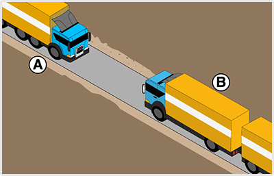
- 430. Mindkét jármű köteles az útpadkára lehúzódni a képen látható helyen, hogy egymás továbbhaladását biztosítani tudják? #703815
- Igen.
- Nem, csak az ’A’ jelű tehergépkocsi.
- Nem, csak a ’B’ jelű járműszerelvény.
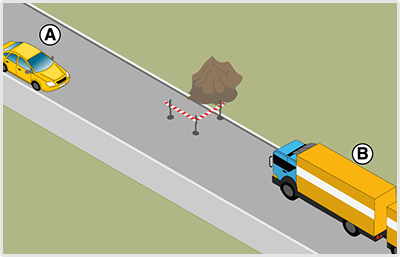
- 431. A képen látható helyzetben mi a szabályos elhaladás sorrendje? #703824
- A ’B’ jelű járműszerelvény elsőbbséget ad az ’A’ jelű személygépkocsi részére.
- Az ’A’ jelű személygépkocsi elsőbbséget ad a ’B’ jelű járműszerelvény részére.
- Kölcsönös udvariassággal megegyeznek az áthaladás sorrendjén.
- 432. Ön a ’B’ jelű járműszerelvényt vezeti. Válassza ki a helyes állítást! #703825
- Elsőbbséget ad az ’A’ jelű személygépkocsi részére.
- Áthajt az útszűkületen, mert elsőbbsége van az ’A’ jelű személygépkocsival szemben.
- Megvárja, amíg forgalomirányító személy érkezik a helyszínre, aki segíteni fogja az egymás melletti elhaladást.
- 433. A képen látható helyzetben melyik jármű tegye lehetővé a másik számára az elhaladást? #703826
- A ’B’ jelű járműszerelvény.
- Az ’A’ jelű személygépkocsi.
- 434. Szabad-e kijelölt gyalogos-átkelőhelyen járművel megfordulni? #714868
- Igen.
- Nem.
- 435. Szabad-e útkereszteződésben járművel hátramenetet végezni? #714869
- Igen.
- Nem.
- 436. Hátramenet végzésekor kell-e a járművezetőnek arra alkalmas irányító személy közreműködéséről gondoskodnia? #714870
- Igen, ha a személy- és vagyonbiztonság ezt megkívánja.
- Nem, soha.
- Igen, minden esetben.
- 437. Szabad-e a villamos mellett elhaladni olyan megállóhelynél, ahol az utasok fel- és leszállása az úttestről, illetve az úttestre történik? #714872
- Nem.
- Igen.
- 438. Szabad-e előzni közvetlenül a kijelölt gyalogos-átkelőhely előtt? #714884
- Nem.
- Igen.
- Előtte igen, csak utána nem.

- 439. Szabályos-e, ha a ’C’ jelű irányító személy megállítja az úttesten zajló forgalmat, amíg az ’A’ jelű jármű kitolat az épületből? #715554
- Nem, mivel nem minősül forgalomirányító személynek.
- Igen, ha az ’A’ jelű jármű vezetője erre felhatalmazta.
- Igen, mert piros tárcsát használ a járművek megállítására.
- 440. Szabad-e előzni be nem látható útkanyarulatban? #721403
- Általában nem.
- Igen.
- 441. Szabad-e előzni bukkanóban? #721404
- Általában nem.
- Igen.
- 442. Szabad-e előzni vasúti átjáróban és közvetlenül előtte? #721405
- Általában nem.
- Igen, de csak a lassan haladó mezőgazdasági vontatót.
- Igen, a kézikocsit mindig meg szabad előzni.
- 443. Milyen feltétel teljesülése esetén szabad előzni be nem látható útkanyarulatban? #721407
- Ha az úttesten egyirányú a forgalom.
- Ha az út főútvonal.
- Ha szemből nem látható közeledő jármű.
- 444. Milyen feltétel teljesülése esetén szabad előzni bukkanóban? #721408
- Ha az úttesten egyirányú a forgalom.
- Ha szemből nem látható közeledő jármű.
- Ha az út főútvonal.
- 445. Milyen feltételek teljesülése esetén szabad előzni be nem látható útkanyarulatban? #721409
- Ha záróvonal van felfestve, és az előzés nem jár annak érintésével.
- Ha szemből nem látható közeledő jármű.
- Ha terelővonal van felfestve, és gyér a forgalom.
- 446. Milyen feltételek teljesülése esetén szabad előzni bukkanóban? #721410
- Ha záróvonal van felfestve, és az előzés nem jár annak érintésével.
- Ha nincsenek útburkolati jelek felfestve.
- Ha a főútvonalon terelővonal van felfestve.
- 447. Szabad-e megelőzni vasúti átjáróban és közvetlenül előtte a kétkerekű segédmotoros kerékpárt? #721411
- Igen, gépjárművel.
- Igen, bármilyen járművel.
- Nem, semmilyen járművel sem szabad.
- 448. Segítenie kell-e járműve megelőzését a lassan haladó jármű vezetőjének? #721412
- Igen.
- Nem.
- 449. Segítenie kell-e járműve megelőzését a nagyméretű jármű vezetőjének? #721413
- Igen.
- Nem.
- 450. Szabad-e előzni körforgalmú úton? #721414
- Igen.
- Nem.
- 451. Szabad-e akadályozni az előzés végrehajtását? #721420
- Nem.
- Igen, de csak a sebesség kismértékű fokozásával.
- Igen, de csak balra húzódással.
- 452. Szabad-e előzni kijelölt gyalogos-átkelőhelyen? #721421
- Nem.
- Igen, ha nincs rajta gyalogosforgalom.
- Igen, de csak motorkerékpárral.
- 453. Szabad-e előzni villamost olyan megállóhely előtt, ahol az utasok le- és felszállása az úttestről, illetőleg az úttestre történik? #721422
- Nem.
- Igen.
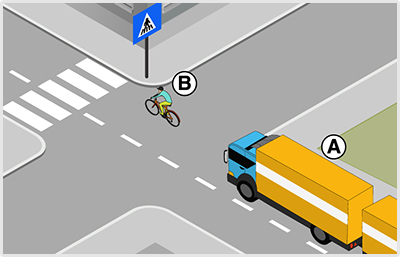
- 454. Mikor viselkedik szabályosan az ’A’ jelű járműszerelvény vezetője az ábrán látható helyen? #721436
- Ha csak a kijelölt gyalogos-átkelőhelyet elhagyva előzi meg a ’B’ jelű kerékpárost.
- Ha megelőzi a kijelölt gyalogos-átkelőhelyen a ’B’ jelű kerékpárost, mivel ott nem tiltott az egy nyomon haladók előzése.
- Ha megelőzi a kijelölt gyalogos-átkelőhelyen a ’B’ jelű kerékpárost, mivel ott nem tartózkodik gyalogos.
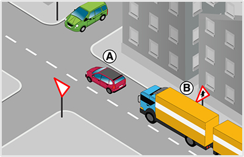
- 455. Szabályos-e, ha az ábrázolt útkereszteződésben a ’B’ jelű járműszerelvény megelőzi az előtte haladó ’A’ jelű gépkocsit? #721447
- Igen, mert olyan úton halad, amelyen elsőbbségét jelzőtábla jelzi.
- Nem, útkereszteződésben mindig tilos előzni.
- Nem, mert útkereszteződésben csak egy nyomon haladó járművet szabad megelőzni.
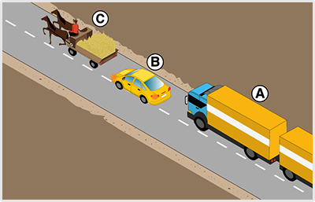
- 456. Ön az ’A’ jelű járműszerelvényt vezeti. Belekezdhet-e a ’B’ jelű személygépkocsi előzésébe? #721458
- Nem, mert a ’B’ jelű személygépkocsi már megkezdte a lovas kocsi előzését.
- Igen, mert harmadikként haladva a legkedvezőbb pozícióban van az előzés megkezdéséhez.
- Igen, mert a ’B’ jelű személygépkocsi még nem tért át a menetirány szerinti bal oldalra.
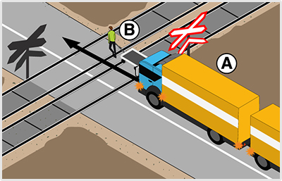
- 457. Milyen magatartást kell tanúsítania az ’A’ jelű jármű vezetőjének az ábrázolt forgalmi helyzetben? #721466
- Az ’A’ jelű járműszerelvény vasúti átjáróban nem előzheti meg a kézikocsit.
- Az ’A’ jelű járműszerelvény ebben a vasúti átjáróban azért előzheti meg a kézikocsit, mert az átjáró többvágányos.
- Az ’A’ jelű járműszerelvény ebben a vasúti átjáróban a záróvonal ellenére is megelőzheti a kézikocsit, mert az csak nagyon lassan képes haladni.
- 458. Szabad-e megelőznie a vasúti átjáróban az ’A’ jelű járműszerelvénynek a kézikocsit? #721467
- Nem.
- Igen, mert sávon belül elfér mellette
- Igen, még a záróvonalon átlépve is.
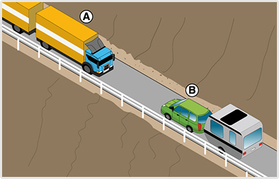
- 459. A képen látható helyzetben mi a megfelelő magatartás? #721588
- A járművek kölcsönösen lehúzódnak az útpadkára, ha így sem férnek el, akkor az a jármű végez hátramenetet, amelyik ezt könnyebben tudja elvégezni.
- Megvárják, amíg forgalomirányító személy érkezik a helyszínre, aki lehetővé teszi az egymás melletti elhaladást.
- 460. Hogyan kell elhelyezkednie a hátramenetet irányító személynek? #721697
- Úgy, hogy lássa a jármű mögötti területet, és a jármű vezetőjével is kapcsolata legyen.
- Minden esetben a jármű előtt helyezkedjen el úgy, hogy lássa a jármű vezetőjét.
- Közvetlenül a jármű mögötti területen helyezkedjen el.
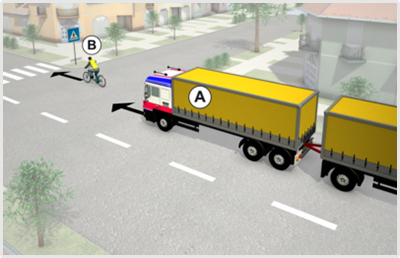
- 461. Szabad-e megelőznie az ’A’ jelű járműszerelvény vezetőjének a ’B’ jelű kerékpárost az ábrázolt helyen? #722267
- Amennyiben az előzést a kijelölt gyalogos-átkelőhelyig nem tudja fejezni, akkor nem.
- Igen, minden esetben.
- 462. Mikor viselkedik szabályosan az ’A’ jelű járműszerelvény vezetője az ábrán látható helyen? #722268
- Ha csak a kijelölt gyalogos-átkelőhelyet elhagyva előzi meg a ’B’ jelű kerékpárost.
- Ha megelőzi a kijelölt gyalogos-átkelőhelyen a ’B’ jelű kerékpárost, mivel ott nem tiltott az egy nyomon haladók előzése.

- 463. Ön a kormánykerékkel jelzett járművet vezeti. Szabad-e megelőznie a ’B’ jelű kerékpárost az ábrázolt helyen? #722278
- Amennyiben az előzést a kijelölt gyalogos-átkelőhelyig nem tudja fejezni, akkor nem.
- Igen, minden esetben.
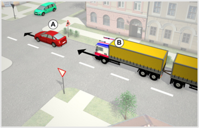
- 464. Szabályos-e, ha a ’B’ jelű járműszerelvény megelőzi az ábrázolt útkereszteződésben az ’A’ jelű gépkocsit? #722284
- Igen, a ’B’ jelű járműszerelvény a jelzőtáblával jelzett útkereszteződésben megelőzhet egy másik személygépkocsit.
- Nem, a ’B’ jelű gépkocsi csak az útkereszteződés után előzheti az előtte haladó ’A’ jelű gépkocsit.
- Nem, a ‘B’ jelű gépkocsi ebben az útkereszteződésben csak állati erővel vontatott járművet előzhet.
- 465. Szabályos-e, ha az ábrázolt útkereszteződésben a ’B’ jelű járműszerelvény megelőzi az előtte haladó ’A’ jelű gépkocsit? #722285
- Igen, mert olyan úton halad, amelyen elsőbbségét jelzőtábla jelzi.
- Nem, útkereszteződésben mindig tilos előzni.
- Nem, mert útkereszteződésben csak egy nyomon haladó járművet szabad megelőzni.
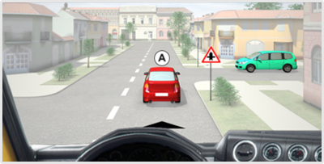
- 466. Ön a kormánykerékkel jelzett járművet vezeti. Szabályos-e, ha az ábrázolt útkereszteződésben megelőzi az Ön előtt haladó ’A’ jelű gépkocsit? #722294
- Igen, mert a jelzőtáblával jelzett útkereszteződésben szabad megelőzni az 'A' jelű gépkocsit.
- Nem, mert csak az útkereszteződés után szabad megelőzni az ’A’ jelű gépkocsit.
- Nem, mert ebben az útkereszteződésben csak az állati erővel vontatott járművet szabad megelőzni.
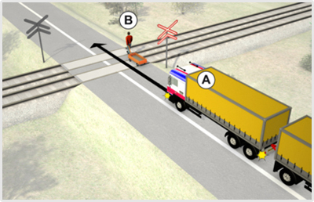
- 467. Melyik állítás igaz az ábrázolt forgalmi helyzetre? #722650
- Az ’A’ jelű járműszerelvény a vasúti átjáróban nem előzheti meg a kézikocsit.
- Az ’A’ jelű járműszerelvény a vasúti átjáróban megelőzheti a kézikocsit.
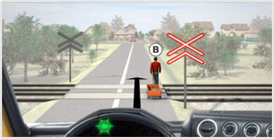
- 468. Ön a kormánykerékkel jelzett járművet vezeti. Melyik állítás igaz az ábrázolt forgalmi helyzetre? #722660
- Az ’A’ jelű járműszerelvény a vasúti átjáróban nem előzheti meg a kézikocsit.
- Az ’A’ jelű járműszerelvény a vasúti átjáróban megelőzheti a kézikocsit.

- 469. Ön a kormánykerékkel jelzett gépjárművet vezeti. Szabad-e megelőznie a vasúti átjáróban az állati erővel vontatott járművet? #723342
- Nem.
- Igen, mert nincs felfestve záróvonal.
- Igen, ha 25 km/h sebességnél lassabban halad az állati erővel vontatott jármű.
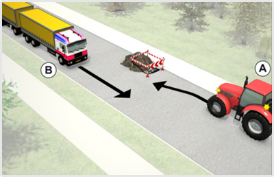
- 470. A képen látható helyzetben mi az egymás melletti elhaladás sorrendje? #723521
- Az ’A’ jelű mezőgazdasági vontató elsőbbséget ad a ’B’ jelű járműszerelvény részére.
- Az a ’B’ jelű járműszerelvény elsőbbséget ad az ’A’ jelű mezőgazdasági vontató részére.
- Kölcsönös udvariassággal megegyeznek az elhaladás sorrendjén.
- 471. Ön a ’B’ jelű járműszerelvényt vezeti. Az úton lévő akadály melletti elhaladás kapcsán van-e elsőbbségadási kötelezettsége? #723522
- Nincs.
- Igen, van.

- 472. Ön a kormánykerékkel jelzett járművet vezeti. A képen látható helyzetben mi az egymás melletti elhaladás sorrendje? #723591
- Az ’A’ jelű mezőgazdasági vontató elsőbbséget ad az Ön által vezetett jármű részére.
- Ön a kormánykerékkel jelzett járművel elsőbbséget ad az ’A’ jelű mezőgazdasági vontató részére.
- Kölcsönös udvariassággal megegyeznek az elhaladás sorrendjén.
- 473. Ön a kormánykerékkel jelzett járművet vezeti. Az úton lévő akadály melletti elhaladás kapcsán van-e elsőbbségadási kötelezettsége? #723592
- Nincs.
- Igen, van.

- 474. Szabályos-e, ha a ’C’ jelű irányító személy megállítja az úttesten zajló forgalmat, amíg az ’A’ jelű jármű kitolat az épületből? #723629
- Nem, mivel nem minősül forgalomirányító személynek.
- Igen, ha az ’A’ jelű jármű vezetője erre felhatalmazta.
- Igen, mert piros tárcsát használ a járművek megállítására.
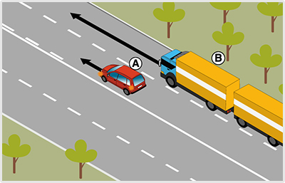
- 475. Ön a ’B’ jelű járműszerelvényt vezeti a képen látható helyen. A külső forgalmi sávban közlekedve elhaladhat-e a belső forgalmi sávban balra kanyarodásra felkészülő ’A’ jelű személygépkocsi mellett? #723810
- Igen.
- Nem, csak akkor folytathatja az útját, ha a személygépkocsi már bekanyarodott.
- Csak akkor, ha nincs mögöttes forgalom.
- 476. Köteles-e a ’B’ jelű járműszerelvény vezetője irányjelzőjével jelezni, ha az ábrázolt helyzetben a külső forgalmi sávban elhalad az ’A’ jelű jármű mellett? #723811
- Nem, mivel nem történik irányváltoztatás.
- Igen, mert minden előzést irányjelzővel jelezni kell.